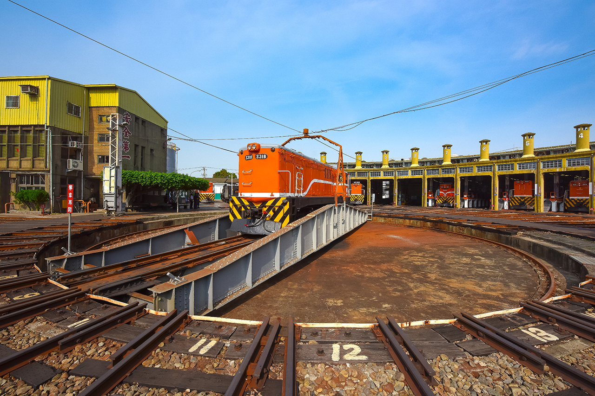
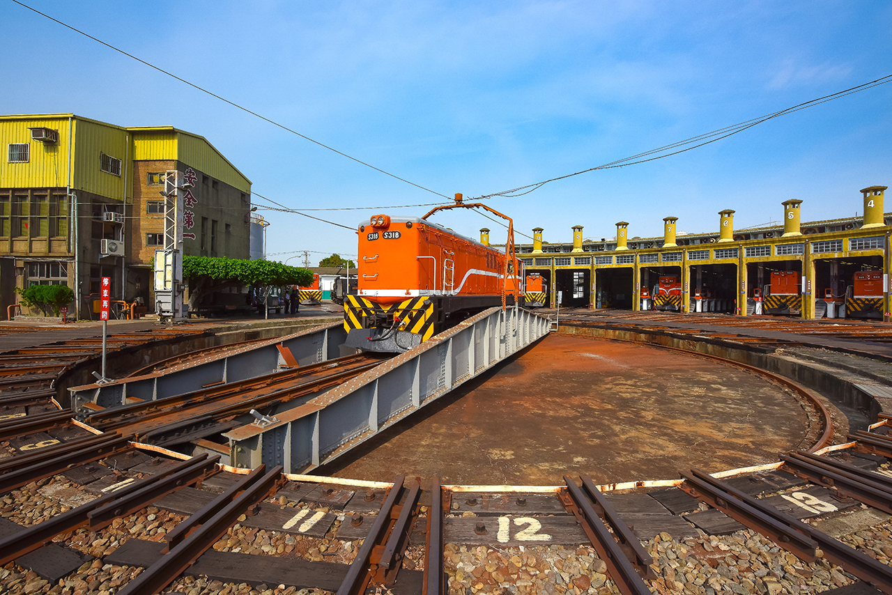

扇形車庫
彰化扇形車庫位於中華民國彰化縣彰化市彰化車站北方，隸屬彰化機務段，建於1922年，現今開放予民眾參觀。庫房建物以調車轉盤為中心 ，呈十二股道放射狀形成一座半圓弧狀車庫。屬於台灣日治時期遺留下來的產物之一。 目前為台灣唯一保存的扇形車庫，是彰化縣的縣定古蹟。
彰化扇形車庫位於中華民國彰化縣彰化市彰化車站北方，隸屬彰化機務段，建於1922年，現今開放予民眾參觀。庫房建物以調車轉盤為中心 ，呈十二股道放射狀形成一座半圓弧狀車庫。屬於台灣日治時期遺留下來的產物之一。 目前為台灣唯一保存的扇形車庫，是彰化縣的縣定古蹟。
